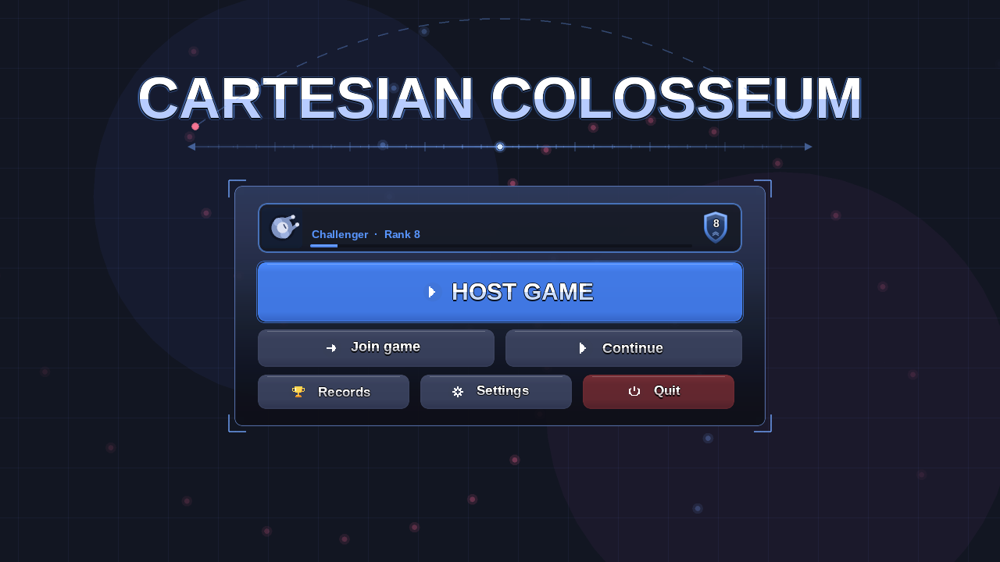
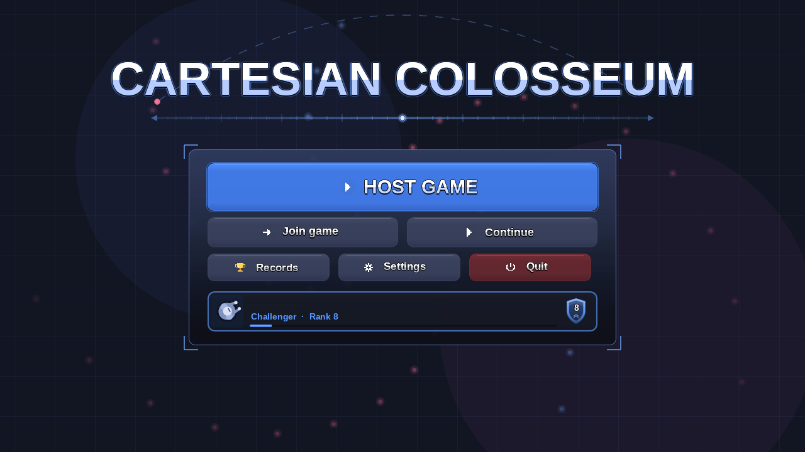
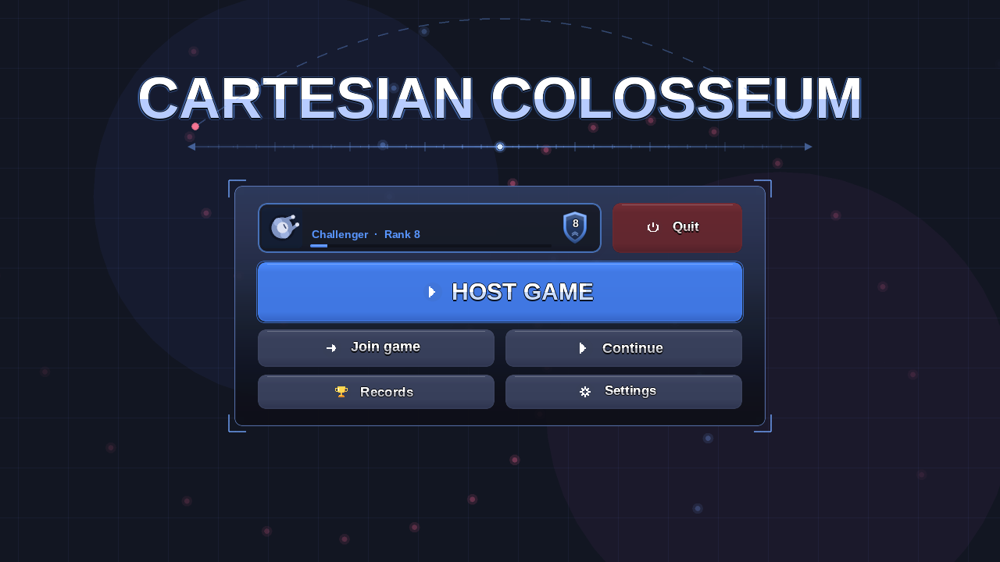

Main Menu Button Layouts
Your player card is now inside the centre box and the bottom bar is gone. Join game, Continue, Records and Settings use the same neutral colour, Host game stays the blue main button, and only Quit is red. Each picture is a screenshot of the real menu, drawn by the game's own menu code with only the positions and button colours changed. The tip line under the title is not drawn by the screenshot tool and stays as it is today.
TodayReference
For comparison. Note the gold Records, green Continue and red Quit.

Option ACard on top
Your player card is the first row of the box, then Host game, Join and Continue, then Records, Settings and Quit.

- The card reads like a header: who is playing, then what to do.
- The bottom bar is gone, so the box is the whole menu.
- The red Quit is the last button in the bottom row.
Option BCard at the bottom
Host game is the first thing in the box, the buttons follow, and your player card closes the box.

- The big blue button comes first, right under the title axis.
- The card sits where the old bottom bar's card was, just inside the box.
- Quit is the red button at the end of the last button row.
Option CCard beside Quit
The top row is your player card with Quit next to it. Below are Host game, Join and Continue, then Records and Settings.

- Quit is by itself in the corner of the box, red, away from the buttons you press often.
- Records and Settings are the same width as Join and Continue, so the lower half is a tidy grid.
- The box is the same size as option A.